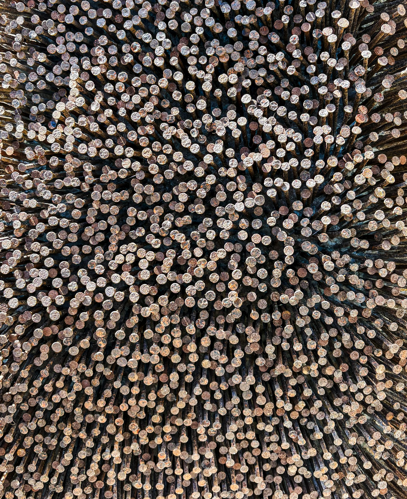
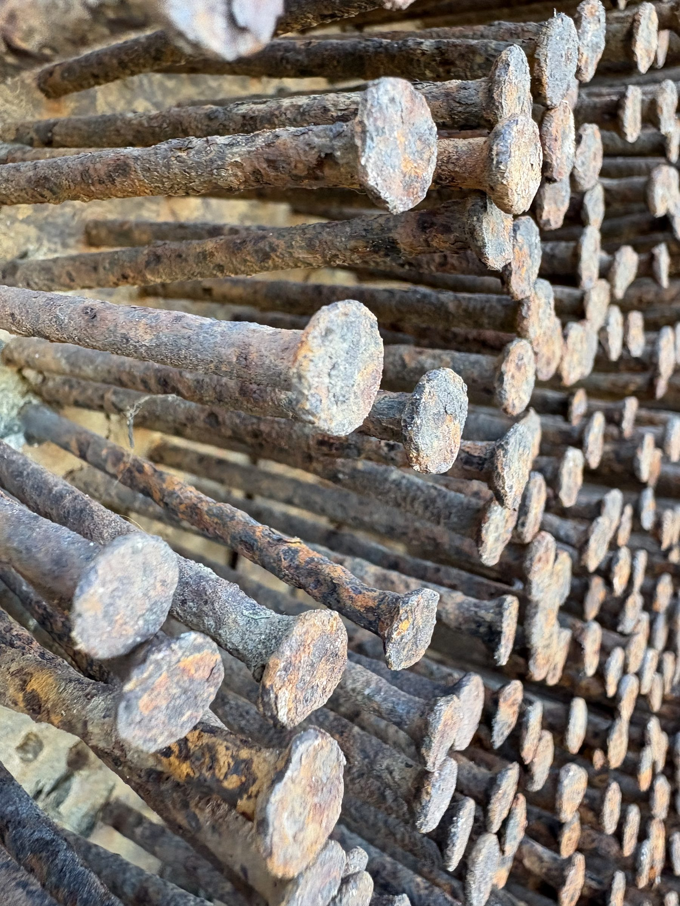
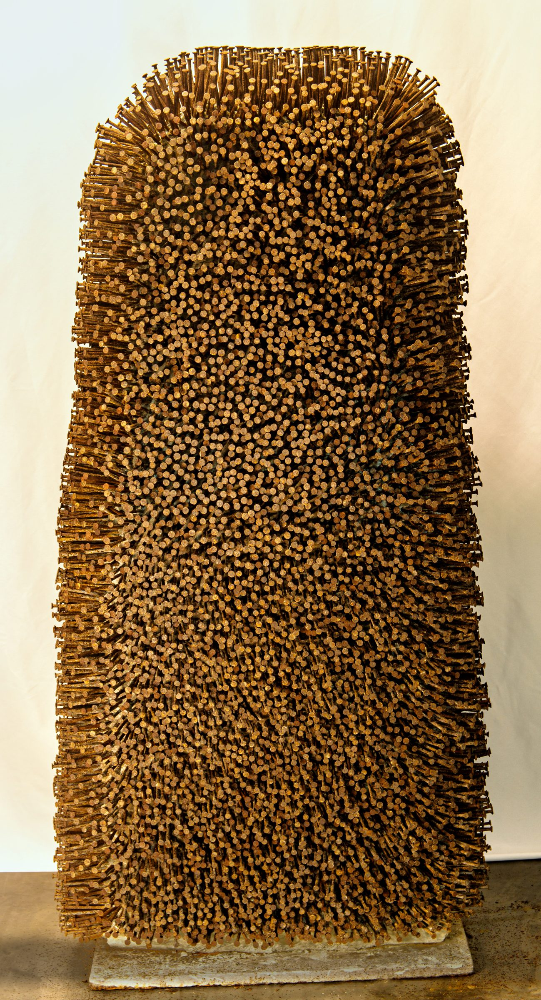
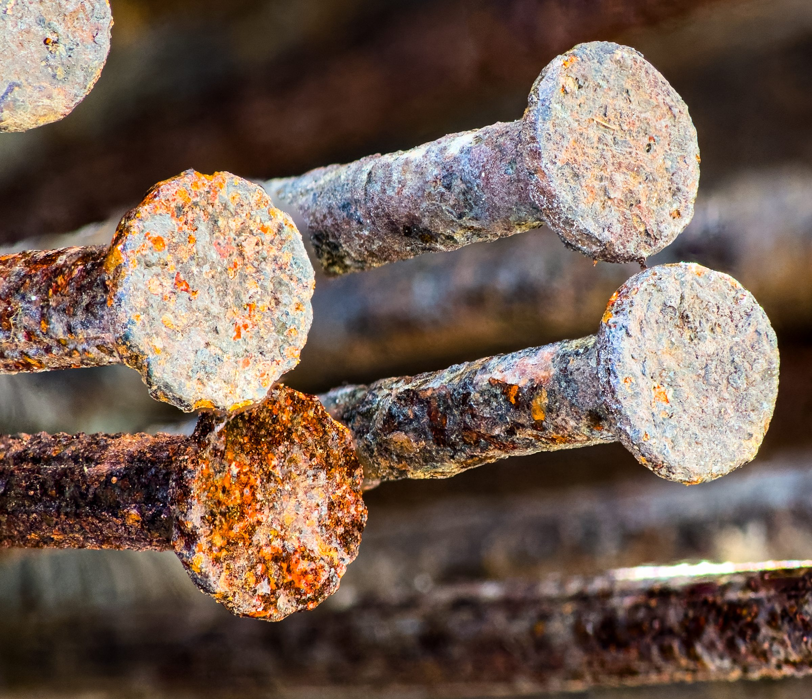
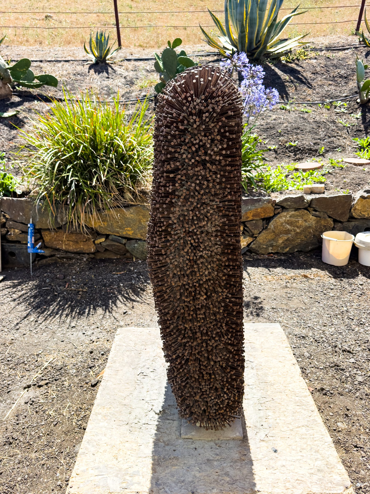

SACRED MONSTER (MONSTRE SACRÉ)
1992–2026
"A conceptual piece made by a primitive"
— S.G.





- Black Virginia Soapstone
- 3.25" steel masonry nails
- Dimensions: 56 × 26 × 10"
- Estimated weight: 1,200 lbs
Sacred Monster marks Szaja Gottlieb’s re-emergence as a sculptor. In progress: IRONY, an homage to Marcel Duchamp.